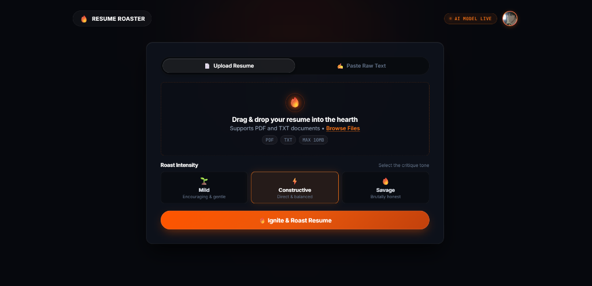

Resume Roaster
Resume Roaster is an interactive AI application built to deliver brutally honest, actionable feedback on developer resumes. It combines automated ATS parsing with multi-provider LLM fallbacks (Google Gemini & OpenAI) to audit formatting, phrasing impact, and keyword alignment.

The Problem
Most job applicants face an opaque black-box screening process: automated Applicant Tracking Systems (ATS) reject up to 75% of resumes before a human recruiter ever sees them. Traditional resume builders offer generic feedback that fails to address why a candidate was filtered out.
How It Works
Candidates upload their resume PDF. The backend extracts structural layout and text tokens via pdf-parse, normalizes bullet points, and performs two complementary analyses:
- ATS Compliance Audit: Checks section headings, date formats, contact details, parsing fidelity, and keyword density against common recruiting parsers.
- Brutally Honest AI Critique: Evaluates bullet impact (STAR method metrics, action verbs, scope) and scores the resume with witty, memorable feedback.

Architecture & Multi-Provider Fallbacks
To guarantee 99.9% uptime and avoid API rate limits, Resume Roaster utilizes a resilient fallback router. Requests first attempt extraction with Google Gemini 1.5 Flash for ultra-fast latency. If a quota limit or timeout is triggered, the system seamlessly fails over to OpenAI GPT-4o-mini without user disruption.